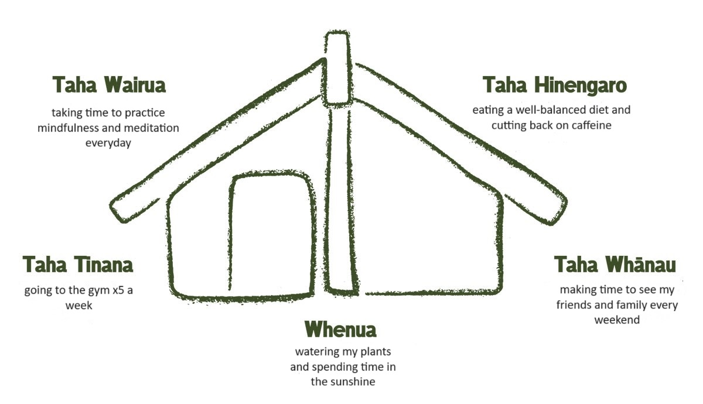

Te Whare Tapa Wha is a wellbeing model developed by Sir Mason Durie in
1984. The model depicts a wharenui or meeting house with four main
walls. These walls represent taha wairua - our spiritual wellbeing, taha
hinengaro - mental and emotional wellbeing, taha tinana - our physical
wellbeing, and taha whanau - our family and social wellbeing. At the
base is whenua - our connection to the land that forms our foundation.
Using these four walls and foundations, I will be creating a wellbeing
plan using the Te Whare Tapa Wha model.
Taking care of ourselves should be considered a no-brainer, but there
may be aspects of your everyday life that you are neglecting without
even realising it. Perhaps, you go to the gym everyday but how do you
protect your spiritual wellbeing? What steps are you taking to ensure
that your emotional needs are being met? Using the Te Whare Tapa Wha
model, I have created a wellbeing plan that will hopefully strengthen
all aspects of my life.

Above is a wharenui that I have personalised to my own wellbeing and the areas that I
believe I can improve upon. In many ways, I had already been doing some
of these things, just not as consciously as I would have liked. For this
reason, for each wall and for my foundations, I will offer a small
explanation.
Taha Wairua (spiritual wellbeing). I have never considered
myself to be a strongly spiritual person. The things that I believe in
are mostly limited to the people around me and nature itself. Therefore,
I wanted to work on something that may have been neglected – my sense of
identity and self-awareness. Mindfulness is being aware of your
feelings and your thoughts. It is something I want to incorporate more
closely in my life, catching those negative emotions before they spiral
into anything worse. Meditation is an extension of mindfulness to me: it
is a time to reflect and to recollect.
Taha Hinengaro (emotional and
mental wellbeing).Recently, I have been trying to eat healthier and to
be more mindful of what exactly I am putting into my body. I think
eating comfort foods is something I tend to fall back on when I am
stressed or emotional, so learning to appreciate foods that are good for
me – and make me feel good – would be a win. And, while I don’t think I
could give up caffeine, I certainly should be cutting down on my intake.
Especially with caffeine’s propensity to make me anxious.
Taha Tinana
(physical wellbeing). I have always been a relatively active person.
Going to the gym is strangely comforting and I almost always feel good or
accomplished, afterwards. However, one thing I want to work on would be
the regularity of when I go. I genuinely think going x5 a week would
improve not only my physical wellbeing but also my mental wellbeing.
Taha Whanau (family and social wellbeing). I recently moved to Auckland,
less than a year ago. I left a lot of family and friends behind. Making
time on the weekends to see my family, to call my parents, to hang out
with friends, has been crucial to my happiness. My partner is very
supportive and he bolsters this wellbeing a lot but I maintaining those familial and social connections is really important to me.
Whenua (land). The
thing that I think I have neglected most, is my connection to nature. Currently, my partner and I
live in an apartment building, in New Zealand’s largest city. I spend most of my
day working in the library and then an hour or two in a gym. I don’t take much time in nature, outside of a walk or two along the Takapuna Beach.
Watering the plants on our balcony and spending time in the sunlight, help
me to feel both accomplished and connected to nature. While I do walk outside, I want to take small
moments in my everyday life to enjoy what I immediately have access to. The sky from our balcony is really beautiful at sunrise and sunset.